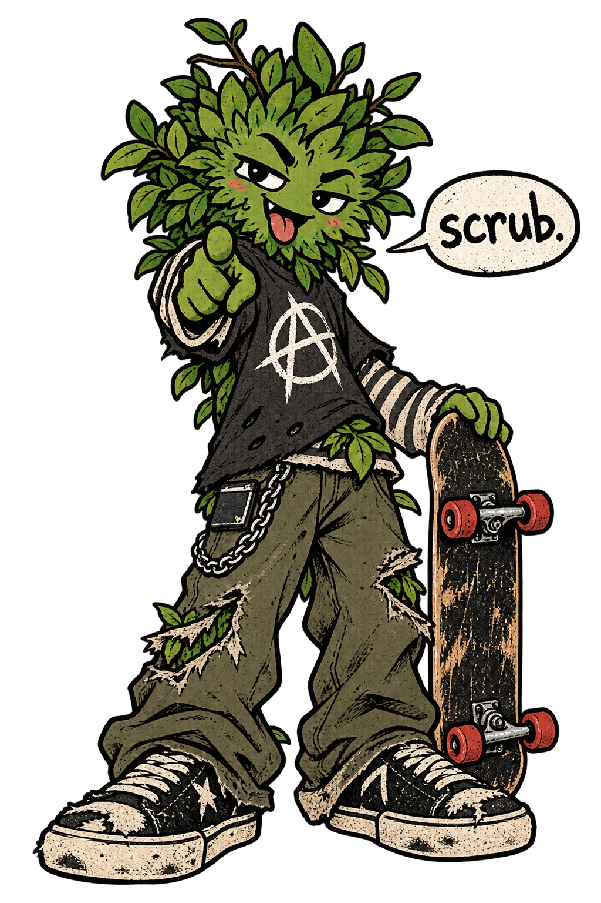

01 Find a moment
NO VIDEO YETGood bits.
All in one place.
Drop a video here.
Scrub around. Collect the evidence.

take a picture. it'll last longer.
A few field notes
Click a sheet cell to choose where your next capture goes. Each capture advances to the next cell. Double-click a filled cell to revisit its moment. Drag cells to swap them.
Arrow keys pause and scrub. Shift jumps 10× further. Small steps are time-based, not guaranteed frame-exact. Remote videos need a direct media URL and cross-origin permission from their host; ordinary YouTube pages won't work.
Use Save sheet to keep an editable copy with your captured images and tray. Your work also autosaves in this browser; wait for “Saved on this device” before closing. Reopen the source video after recovery. Saved sheet files remain your portable backup.
Frame tray 0
Collect candidates here. Pick a sheet cell, then click a tray frame to place it. Replaced frames come back here.
02 Build your sheet
0 / 12 FRAMES1920 × 1440 px · ready when you are